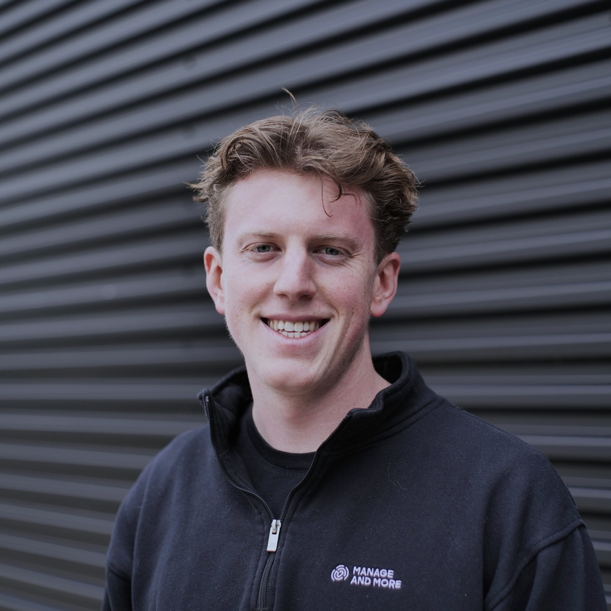

Bau Hardware und KI, die draußen auf dem Solarpark laufen.
Wir sind ein kleines Team aus München und bauen die Prognose-Infrastruktur für das Solarzeitalter. Wer jetzt dazukommt, baut am Fundament.
Arbeit, die man auf dem Solarpark sieht.
Ein echtes Problem
Solarstrom schwankt mit jeder Wolke. Unsere Prognosen entscheiden mit, wie gut er sich handeln, speichern und ins Netz bringen lässt.
Hardware trifft KI
Eigene Sensor-Hubs im Feld, eigene Modelle dahinter. Du siehst, wie deine Arbeit auf echten Solarparks läuft.
Kurze Wege
Du arbeitest direkt mit den Gründern und triffst Entscheidungen in deinem Bereich selbst.
Tempo
Wir arbeiten in Sprints von drei Tagen. Aus einer Idee am Montag wird bis Donnerstag ein Ergebnis.
Wen wir suchen.
ML Engineer Computer Vision
Modell-TeamMünchenVollzeitEmbedded & Hardware Engineer
HardwareMünchenVollzeitWerkstudent:in Business Development
VertriebMünchenTeilzeitAlle Stellen (m/w/d). Nichts Passendes dabei? Schreib uns trotzdem.
Mathematik, Robotik und Energiewirtschaft an einem Tisch.

David Dietz
Mathematics & Management

Benjamin Obermeier
Robotics, Cognition, Intelligence

Naomi Jaguttis
Management & Sustainable Energies
Vier Schritte, kein Anschreiben.
Bewerbung
Lebenslauf oder LinkedIn-Profil genügt. Ein Anschreiben brauchst du nicht.
Kennenlernen
Ein Mittagessen oder Call mit jemandem aus dem Gründerteam.
Fachgespräch
Du arbeitest dich in ein Paper oder Problem ein und zeigst uns, wie du denkst.
Entscheidung
Du lernst das Team kennen. Danach hörst du schnell von uns.